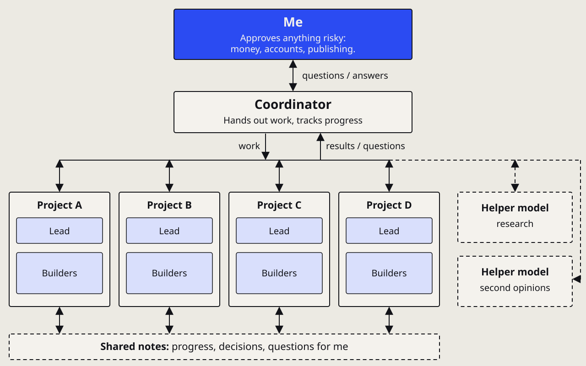
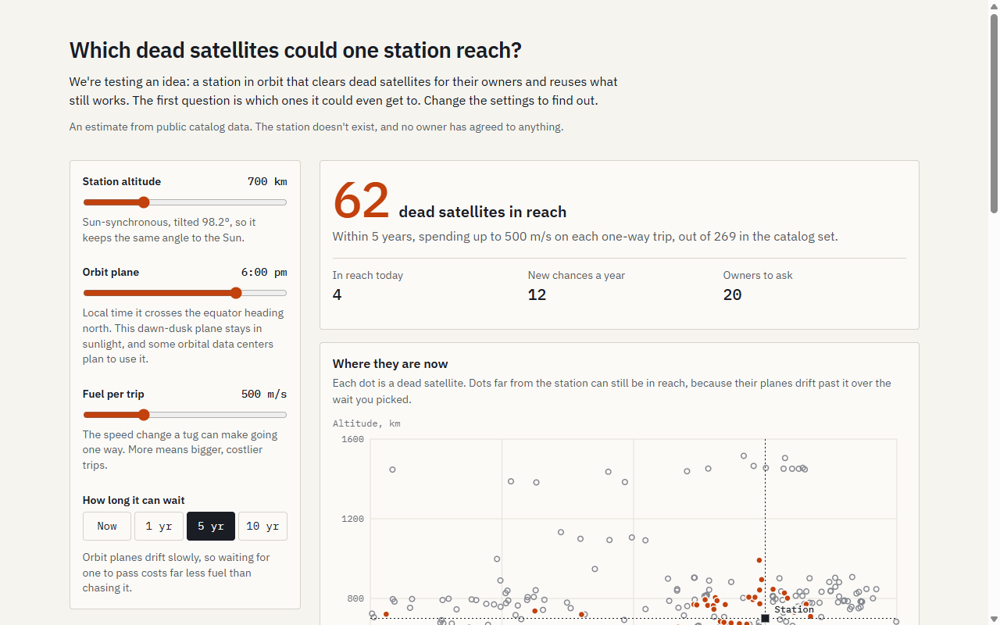

AI tools and agent systems
I build AI tools, then measure whether they work.
Most of my software is written by teams of Claude Code agents that I direct. I set the checks, read the results, and publish the numbers, including the experiments that failed.
- 13projects written up, failures included
- 0 / 35trading-model variants passed the bar set before they ran
- 24Claude Code sessions on one live board
- 1,195research notes, every source opened and checked
Selected work
Six projects and the numbers they produced. The first one failed, and it taught me the most.
-

Market Impact Lab
Can a map of everything that moves Coinbase stock predict its next hour? I built a test strict enough to give an honest answer.
0 / 35 variants passed the bar written down before they ran.
-

Running a team of AI agents
About twenty Claude Code sessions working as one team, with anything risky coming to me first.
24 sessions on one live board.
-
Jev Launcher
Press a hotkey, type or say what you want open, and it opens. A local model plans the steps; anything destructive waits for a spoken yes.
Speech model picked on 46 of my recordings: 38/40 vs 30/40. 2,684 automated tests.
-

Berry
An AI employee that turns an idea into a brand kit, a website and first drafts, and asks before anything goes public.
198/198 unit tests, 8/8 browser tests on desktop and phone.
-
local-llm-mcp
An MCP server that lets Claude Code hand small jobs to models on my own GPU, and checks every answer before Claude sees it.
Model alone 5/7 planted bugs; with the scanner 7/7. Secret-looking files never leave the PC.
-

Dead Satellite Reach
A live estimate of which dead satellites one orbital station could reach, from public catalog data. It says on the page what it leaves out.
62 of 269 dead satellites in reach within 5 years (default settings).
All projects
Every project I've written up, with what it was built with and where it stands today.
| No. | Project | What it is | Built with | Status | Open |
|---|---|---|---|---|---|
| 01 | Market Impact Lab | Tested whether a map of what moves Coinbase stock can call its next hour. It can't. | Python, LightGBM, PyTorch, LoRA | No edge | |
| 02 | Running a team of AI agents | About twenty Claude Code sessions working as one team. | Claude Code, Herdr, hooks, worktrees | In use | |
| 03 | Jev Launcher | Type or say what you want open; destructive steps wait for a spoken yes. | TypeScript, Electron, Ollama, Parakeet | Shipped | |
| 04 | local-llm-mcp | Hands small jobs from Claude Code to models on my own GPU, and checks the answers. | Node, MCP, Ollama | In use | |
| 05 | Research Agent | A local research chat with a citation on every claim and a checker for unsupported ones. | JavaScript, Ollama, GDELT, SEC EDGAR | Shipped | |
| 06 | Dead Satellite Reach | Which dead satellites one orbital station could reach, from public catalog data. | JavaScript, Python, CelesTrak | Live | |
| 07 | Limit Watch | A tray app that spots AI usage-limit messages and reads when they reset. | Electron, TypeScript, Ollama | Prototype | |
| 08 | Prompt Cleaner | Select text, press a hotkey, and filler words and typos are cleaned in place. | Python standard library, Ollama | Shipped | |
| 09 | Berry | An AI employee that turns an idea into a brand kit, a website and first drafts. | TypeScript, React, SQLite, local LLM | Prototype | |
| 10 | Live Fact-Checker | Underlines false sentences in a Google Doc as you type, with a fix and a source. | Chrome extension, Ollama, Wikipedia | Spike | |
| 11 | Research Knowledge Base | Research notes with one rule: never cite a source that wasn't opened and checked. | Markdown, source checks | In use | |
| 12 | StudySync | Group work in Google Docs where each student's AI agent coordinates in the open. | Node, Chrome extension, Ollama | Prototype | |
| 13 | Anvil Orbital | A space startup with my co-founder Hudson: retired satellites as data centers in orbit. | HTML, JavaScript, Python, CelesTrak | Idea stage |
Most of my work is directing AI agents, then checking what they built.
I run about twenty Claude Code sessions as a team, write the brief, decide how we'll know something works, and read what comes back. The agents write a lot of the code; my job is choosing what to build, setting the checks, and stopping when the numbers say stop.
The project I learned the most from failed: 35 machine-learning model variants tried to predict Coinbase stock, and none beat trading costs. Building the test that proved it taught me more than any model did.
I like software that runs on your own machine, keeps your data there, and says when it isn't sure.
- 01
Brief
Write down what we're building and how we'll know it works, before any code.
- 02
Checks first
Tests and pass bars are set before the code or the model runs, so a lucky result can't sneak through.
- 03
Numbers out
Results go on the page as measured, the failed ones included.
Now
- Until May 2027A frozen trading model logs paper calls, with no money, until 200 trades or 21 May 2027. The results stay sealed until then so I can't fool myself early.
- Nov 2026Writing up every project properly, starting with this site.
Let's talk.
- Emailandreicmarinescu1@gmail.com
- GitHubgithub.com/Berryderi
- LinkedInAndrei Cristian Marinescu